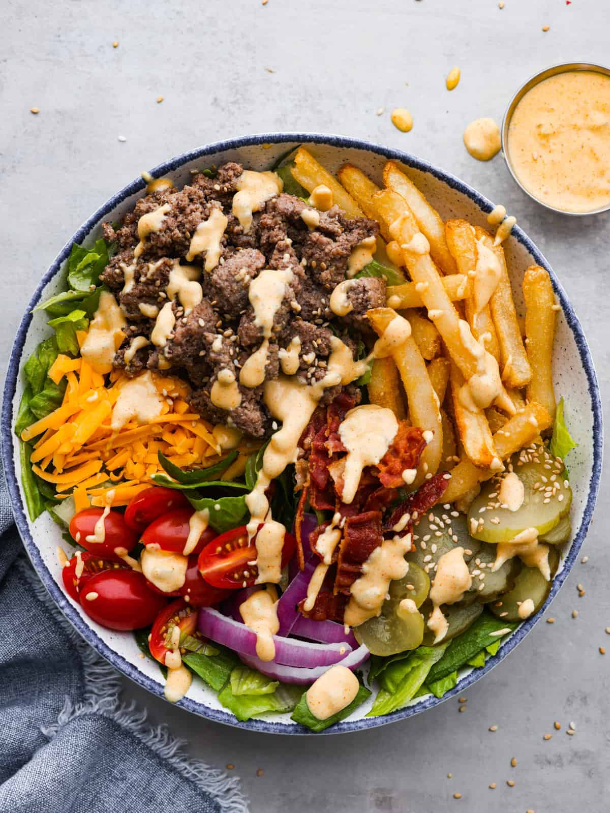

Burger Bowl

Burger Bowl Description
Hello! In this blog page i will teach you how to make an amazing healthy alternative to a burger!
Ingredients
- Ground Beef
- Salt
- Pepper
- Cooking Oil 'in this recipe we use organic virgin olive oil'
- Any Shredded Cheese
- Pickles slices
- Ketchup
- Chopped Lettuce
- And lastly avocado
Recipe Steps
- Put your cooking oil into the pan and set stove on 350 degrees
- Dab your salt and pepper into the groundbeef
- Cook ground beef till all meat is brown
- Put your ground beef into a bowl
- Spread some of your chopped lettuce onto the beef
- Now its time to put your favourite shredded cheese
- Then put few slices of pickles on top
- Cut a few slices of avocado and place them into the bowl
- Then lastly squirt in your favourite ketchup and enjoy!